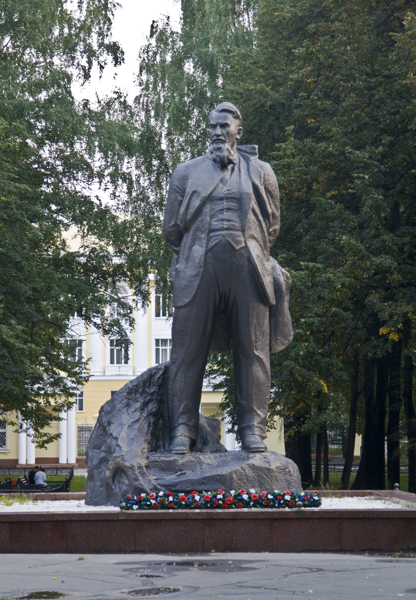

1.Текст
За невероятно короткий срок в Челябинской области под личным контролем Игоря Васильевича был сформирован полный цикл производства атомного оружия. 24 ноября 1945 года в строительном районе №11 на южном мысе озера Иртяш между городами Касли и Кыштым, был вбит первый колышек, положивший начало городу Озёрску и комбинату «Маяк». Это место было выбрано не случайно. Оно удалено от крупных городов, вокруг много воды, которая необходима для охлаждения реактора. В декабре на площадку начали прибывать первые строители.
В СССР было лишь семь учёных и конструкторов, участвовавших в разработке ядерного оружия и трижды удостоенных звания Героя Социалистического Труда. Четверо из них работали в Челябинской области. В 1948 году в Озёрске был запущен первый промышленный реактор для производства оружейного плутония.
В 1957 г. под руководством И.В. Курчатова в Институте атомной энергии были сооружены уникальные экспериментальные установки для исследований по физике плазмы.
Имя ученого увековечено в названии ведущей научной лаборатории мира – НИЦ "Курчатовский институт", улиц и площадей в 30 городах бывшего СССР, атомной электростанции, аэропорта в Челябинске, кратера на Луне, золотой медали Российской академии наук.
2. Задание к тексту
Пересказ на итоговом собеседовании должен быть подробным.
Цитату нужно включать в пересказ по смыслу - в подходящее место.
Президент НИЦ "Курчатовский институт" Михаил Ковальчук: "Представить невозможно, как этот человек буквально вытащил на себе всю махину советского атомного проекта. Это встречается крайне редко в мировой науке вообще."
3.Описание памятника И.В. Курчатову в Озерске
